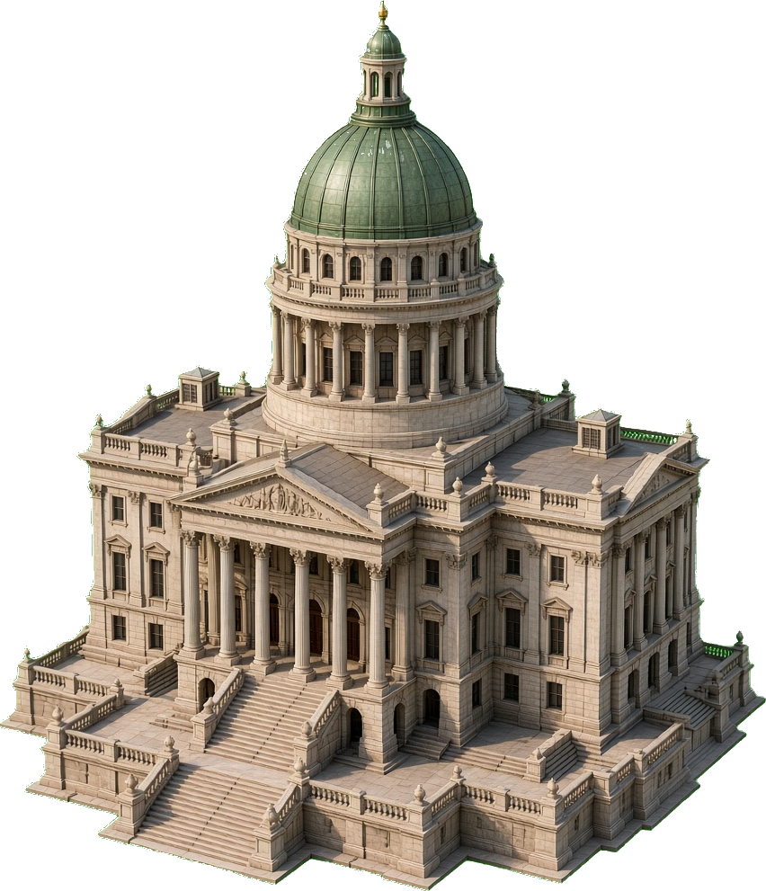

Shipped on player map — baked capitol (PBR-style)
Keyed via scripts/key-gov-capitol-bake.mjs from
gov-capitol-isometric-bake-master.jpg (replace with Blender PNG when ready).
Registry: MapLandmarkArtLayer + lazy @2x chunk.

gov-capitol-isometric-bake · player map